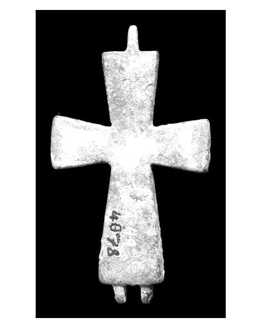
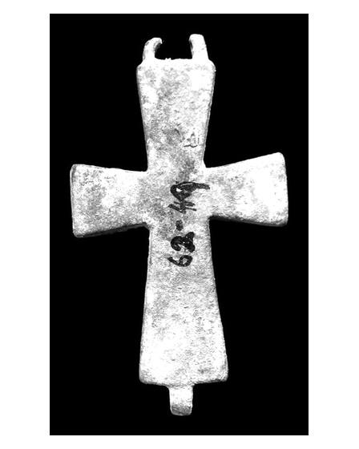

Catalog › CE-0382 · APH2017-1
Encolpion bivalv din aliaj de cupru, cat. 1, Aphrodisias
nedatat · Aphrodisias, Turcia
double-sided reliquary cross (enkolpion), altul; nedatat; found at Aphrodisias, Turcia.




Identificare
- Categorie
- Encolpion bivalv (relicvar)
- Material
- Altul
- Stare
- Întreagă
- Dimensiuni
- Î 63 × L 34 × Gr 8 mm
Iconografie
- Descriere avers
- Două valve, suprafețe foarte uzate; nu s-au păstrat știfturi, deci mecanismul balamalei nu e fixat. Balamale simple la ambele capete ale brațului vertical, toate brațele ușor lărgite.
- Limba
- Fără inscripție
Datare și atribuire
- Datare
- nedatat
- Centru
- Necunoscut
- Tipologie
- Pitarakis (2006), forma tip I
Descoperire
- Localitate
- Aphrodisias
- Țară
- Turcia
- Context
- Necropolă / mormânt
- Coordonate
- 37.7088° N, 28.7238° E
- Precizia locului
- Doar localitatea
Păstrare și referințe
- Nr. inventar
- 62-049
- Bibliografie
- H. Jeffery, The Archaeology of Middle Byzantine Aphrodisias, teză DPhil în arheologie clasică, University of Oxford, aprilie 2019 [Jeffery 2019], vol. 3 (Figures), Descriptive Catalogue Four: Copper Alloy Reliquary Crosses, cat. nr. 1 (paginile nu sunt numerotate în PDF; p. PDF 431), fotografie reprodusă la p. PDF 430. Publicată anterior: Caruso (2016), fig. 25.4.
- Figura
- fotografie în catalog, fără număr de figură
- Planșe
- Jeffery 2019, vol. 3, Cat. Four, p. PDF 430
- Observații
- Context: Cath.62.06. Recuperată intactă în mormânt; jurnalul de șantier și descrierea din inventar menționează păr, posibil uman, în cavitate. Publicată anterior: Caruso (2016), fig. 25.4. Dimensiuni: L. 6,3 × l. 3,4 × gros. 0,8 cm. Cele două imagini nu sunt atribuite în sursă feței sau reversului. Material: „copper alloy” (aliaj de cupru) în sursă. Coordonate: ale localității (aproximative), nu date în sursă.
Citare: Corpus Encolpiorum, CE-0382, Encolpion bivalv din aliaj de cupru, cat. 1, Aphrodisias, --root/piese/APH2017-1/ (accesat 2026-10-17).